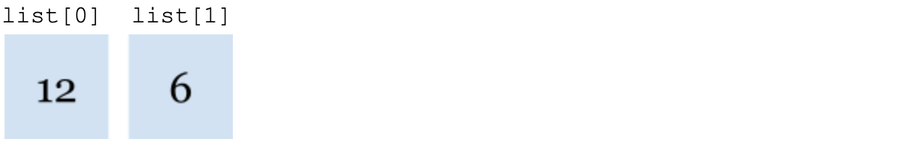
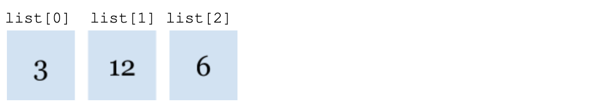
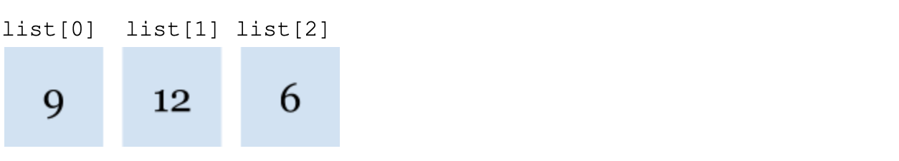
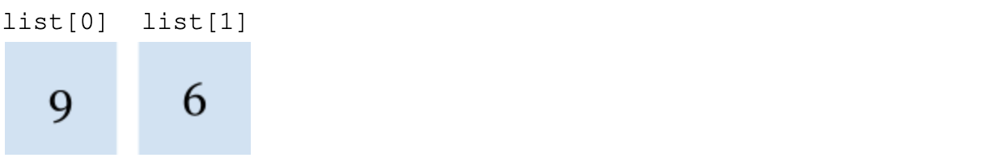

Back to Tutorials
Arrays
An array is a data structure that is used to store multiple values of the same data type in a single variable, instead of declaring separate variables for each value. For example, if there were 15 test scores, instead of having 15 individual integer variables, an array of the integer data type could hold all 15 numerical values. In Java, as an array is an object, the keyword new must be used in the declaration. To declare an array, the data type and length must be established. The size of an array remains fixed once the array is created. Additionally, square brackets [] should be used to indicate that an array is being created. An example of a declaration statement for an integer array with a length of 3 would be as follows:
int [] arr = new int [3];
When arrays are declared in this manner, the elements are automatically initialized to 0 for the primitive numeric data types, false for boolean variables, and null for object references. Each item in an array is called an element, and each element is accessed by its numerical index. The first index of an array is always 0 and the last is the length of the array - 1. This would explain why arr[3] would be used to access the fourth element in an array. To initialize an array, individually assign each element to a value (Figure 1) or use an initializer list, in which all the values of the array would be written in curly braces {} (Figure 2).
Figure 1 Figure 2
arr[0] = 4; arr = {4, 8, 12};
arr[1] = 8;
arr[2] = 12;
When the number of elements in an array is either unknown or needed, the Java array has a unique instance variable length that can be accessed. This length variable can be used in many situations, the most common one being for the traversal of an array. When traversing/ loop through an array, a for loop (Figure 3) can be used to access the index of any element, replace or remove elements , or to access only a few of the elements.
Figure 3
for (int x = 0; x < arr.length; x++){
System.out.println (arr[x]);
}
In the for loop (Figure 3) , the loop counter variable x which starts at 0, will increase by 1 while it is less than the length of the array. This will result in every element of this array to be printed on the next line as it will access all the elements at index (x).
Figure 4
for (int x : arr){
System.out.println (arr[x]);
}
On the other hand, a for-each loop, which is another way to traverse an array, can access every element in an array without replacing or removing any elements. (Figure 4) This will print the same values as the previous array traversal (Figure 3). Although the situations to use a for-each loop is quite limited, an advantage of using a for-each loop is that it would be less likely for the program to throw an ArrayIndexOutOfBonds Exception. This exception is thrown if the programmer attempts to access an index that is outside of the range between 0 and the length -1 which can be a common mistake when using the regular for loop.
Since arrays are treated as objects, passing an array as a parameter would mean passing the object reference. Since a copy of the array passed is not made, the elements of the actual array can be altered and accessed.
ArrayLists
What are ArrayLists?
An alternative way of storing a list of objects in Java is the ArrayList
Figure 1
ArrayList
Methods of the ArrayList
Given that the ArrayList has been created, the methods of List
add(E obj)
Firstly, the add(E obj) method can be used to add elements to the ArrayList .
list.add(12);
When there is more than one element in the ArrayList, this value would be added to the end of the list. The following diagram would illustrate the current contents in the ArrayList.

If you wanted to add an element at index 0, the add(int index, E element) method can be used. The following diagram would illustrate the current contents in the ArrayList.
list.add(0, 3);

get (int index)
Next, the method get (int index) would return the element at position index in the list
list.get(1);
If this was printed, as the element at index 1 in the list is 12, it would return 12.
set (int index, E obj)
To replace an element, the method set (int index, E obj) can be used to replace the
element position index with obj.
list.set(0,9);

As you can see, the element at index 0 which was originally 3 has been replaced with 9.
remove (int index)
Following that, the remove (int index) method would remove the element from the position index.
Two key things to notice is that this would also move elements to the right of the position index have 1 subtracted from
their indices and that the size of the list also decreases by 1.
list.remove(1);

As you can see, the element at index 1 which was originally 12 has been removed from the ArrayList.
size()
Finally, the size() method can return the number of elements in the list. For the traversal of
ArrayLists, the size() method can be used the same way the length feature would be used for an array in a for loop.
list.size();
As there are two elements in this ArrayList, this statement returns the value of 2.
Hopefully, this tutorial has given you the basic understanding of what an ArrayList is and how to implement some of it's methods.
Back to Tutorials